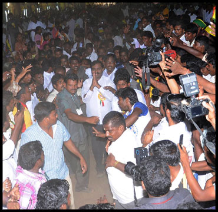
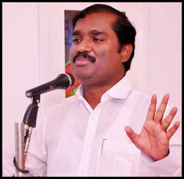
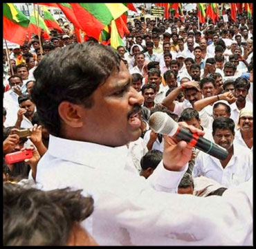

கடலூர் மாவட்டம், குறிஞ்சிப்பாடி வட்டம், புலியூர் காட்டுசாகை கிராமத்தில் 1970 -ல் திருநாவுக்கரசு , தனக்கொடி இணையருக்கு ஐந்தாவது பிள்ளையாக, விவசாய குடும்பத்தில் பிறந்தவர் வேல்முருகன்.
1985ல் தனது சிறு வயதில், தமிழ்நாடு விடுதலைப் படையால் ஈர்க்கப்பட்டு , அவர்கள் நடத்தும் கூட்டங்கள் மற்றும் பல்வேறு நிகழ்வுகளில் கலந்து கொண்டார். அடித்தட்டு மக்களின் மீது காவல்துறையின் அடக்கு முறையினை எதிர்த்து, நடத்தப்பட்ட காவல் நிலையத் தாக்குதல்களில் விசாரணைக்கு உட்படுத்தப்பட்டார்.
1987ல் தமிழ்நாடு விடுதலை படைக்கு அதிக பட்சமான நெருக்கடியினை அரசு கொடுத்த நேரம். வன்னியர்களுக்கான இட ஒதுக்கீடு தீவிரமடைந்தது. வன்னிய மக்களின் அவலங்களை முன்பே உணர்ந்திருந்த அவர். தீவிரமாகத் தன்னை, இட ஒதுக்கீடு போரட்டத்தில் ஈடுபடுத்திக் கொண்டார்.
இதனால், காவல்துறையினரால் பல நெருக்கடிகளை சந்தித்தார். தான் மட்டுமல்லாது, தனது குடும்பமும் நெருக்கடியினை சந்திப்பதால் , சென்னையை தனக்கு ஏற்ற இடமாக மாற்றிக் கொண்டார்.

பாட்டாளி மக்கள் கட்சியின் சென்னை திருவொற்றியூர் நகர செயலாளராக அரசியலுக்குள் நுழைந்தார்.
கட்சியில் கடுமையான களப்பணி ஆற்றியதின் மூலம் மாநில இளைஞரணிச் செயலாளர் பொறுப்பும் - 24/06/1996-ல் நடைபெற்ற சட்டமன்றத் தேர்தலில், திருவெற்றியூர் வேட்பாளராக களமிறக்கப்பட்டார்.
தொடர்ந்து , பண்ருட்டி ராமச்சந்திரனை பா ம க விலிருந்து நீக்கிய பிறகு , அவரை எதிர்ப்பதற்கு சரியான ஆள் இவரே என்று முடிவு செய்து, ஒருங்கிணைந்த கடலூர் மாவட்டச் செயலாளர் பதவி அவரைத் தானாகவேத் தேடி வந்தது...! அவரது தனித் தன்மையும், ஆளுமையும் , அவரை பண்ருட்டி சட்டமன்ற தேர்தலில் 2001-ல் பா ம க வேட்பாளராக களமிறக்கப்பட்டார்.
அதில் வெற்றியும் பெற்று, சட்டமன்றத்தில் தனது கன்னி பேச்சால் அனைவரையும் கவர்ந்தார். தனது பேச்சாற்றலாலும், இளைஞர்களின் செல்வாக்கைப் பெற்றிருந்ததாலும், சட்டமன்ற உறுப்பினர்களிலேயே, தனியான அடையாளத்தை பெற்றிருந்தார்.
தனது செயல்பாட்டால் 'பாரதஜோதி' என்ற பட்டத்தை தனதாக்கினார். அதனைத் தொடர்ந்து, கொறடாவாக முன்னிறுத்தப்பட்டார். ஒவ்வொரு முறையும் அவருடைய பேச்சும், செயல்பாடுகளும், மெருகேறியே வந்திருக்கின்றன. ஆம், அவரது செயல்பாடுகள் எதிர்கட்சித் தலைவர்களைக் கூட , தன் வசப்படுத்தியது..
அதுவே , மீண்டும் அவரை 2006-ல் பண்ருட்டி சட்டமன்ற தேர்தலில் வேட்பாளராக களமிறக்கியது. அதில் வெற்றியும் பெற்றார்.

பிறகு உறுதிமொழிக் குழு உறுப்பினராக பயணித்தார். அவருடைய திறமை மிகுந்த செயல்பாடு அவரை உறுதிமொழிக் குழு -தலைவராக உயர்த்தியது. தமிழகம் முழுவதும் பயணித்து , ஆய்வுப் பணிகளை திறம்படச் செய்து காட்டினார்.
சென்னை மெரினா கடற்கரையில் சுண்டல் விற்கும் சிறுவர்களுக்கு மாலை நேர கல்வியை தர வழி வகுத்தார்.
முழு உத்வேகத்துடன், தமிழகம் முழுவதும் பயணத்தைத் தொடர்ந்தார். அவர் தொண்டர்களை அணுகும் விதம், அவரை இரண்டாம் கட்ட தலைமையாக உயர்த்திப் கட்சியின் இணைப் பொதுச் செயலாளராக அறிவித்தது.
இளையோர் கூட்டத்தின் நம்பிக்கை நட்சத்திரமாக விளங்கினார். பென்னாகரம் -இடைத் தேர்தலில் அவர் களமாடிய விதம் , அனைவரையும் ஆச்சரியத்தில் ஆழ்த்தியது. தனது கட்சி , தோல்வியினை சந்தித்தாலும்..! அசைக்க முடியாத ஓட்டு வங்கியினைப் பெற காரணமாக இருந்தார்.
மீண்டும் , நான்காவது முறையாக 2011-ல் நெய்வேலி தொகுதியில் சட்டமன்ற வேட்பாளராகப் போட்டியிட்டு, தோல்வியினைச் சந்தித்தார். அதிகாரமிக்க என்எல்சிக்கு - எதிராகப் பல போராட்டங்களை சமரசமின்றி முன்னெடுத்ததும், நெய்வேலி நிர்வாகம் வேல்முருகனுக்கு எதிராக களமாடியதுமே, தோல்விக்கு காரணமாக அமைந்தது.
பாட்டாளி மக்கள் கட்சியின் படு தோல்விக்குப் பிறகு , தனது கட்சியின் செயற்குழு கூட்டத்தில் தோல்விக்கான காரணம் பற்றி , மனம் திறந்து பேசினார். அதன் விளைவாக கட்சியின் அடிப்படை உறுப்பினர் பதவியிலிருந்து நீக்கப்பட்டார்.
தமிழக வாழ்வுரிமைக் கட்சி புதிய கட்சியைத் தொடங்கி 2016-ல் சட்ட மன்ற தேர்தலில், நெய்வேலி தொகுதியில் சுயேட்சையாக போட்டியிட்டு ஏறத்தாழ 32,000 வாக்குகள் பெற்று தன் மக்கள் செல்வாக்கை நிரூபித்தார்.
